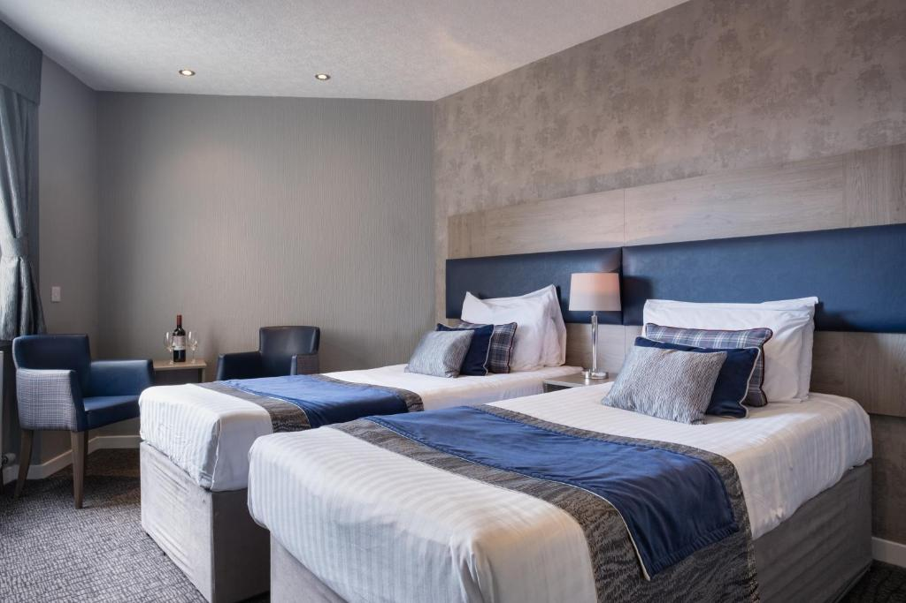

Your Home Away From Home
Indulge in the distinctive charm of the Aberdeen Room at Robertson's Bed and Breakfast. Named after the vibrant city it draws inspiration from, this room offers a cozy retreat with a touch of Scottish elegance.
The Aberdeen Room is designed for comfort and relaxation, featuring two inviting twin beds adorned with plush linens. The decor captures the essence of Aberdeen's rich history, blending traditional Scottish elements with modern comforts. Warm hues and tasteful furnishings create a welcoming ambiance, inviting guests to unwind after a day of exploration.
While the Aberdeen Room does not have ensuite facilities, it ensures privacy and convenience with a separate, well-appointed bathroom just steps away. Immerse yourself in a hot shower or a soothing bath, surrounded by contemporary amenities and thoughtful touches.
For your convenience, a print option is available, allowing you to have details about the Aberdeen Room at your fingertips.
Print